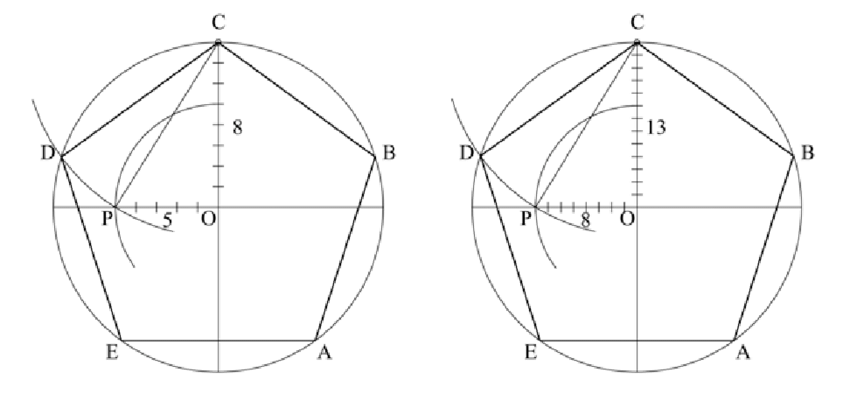

During the last summer, I got into thinking; What would a program language look like if it would be designed to perform euclidean construction only?

The programming language would be assumed to only have a “Straightedge” and a “Compass”, and try to reason about certain input streams ( programs ). Is the provided construnction in the program correct? And other such questions. This got me into thinking and researching a lot about programming languages, designing them and of course compilers. I read more and more about compilers, and I got enticed enough to pick it up as a lesson in the current semester (five) of Uni. When given more thought, I decided I want to learn more about formal methods, theorem provers like coq and agda and so fourth.
I finally settled with this: Make a programming language to do basic formal verification in Automata Theory. In order not to neglect my new found love for compilers, I decided to start at just that. Making a compiler for a language ( yet to be named ), that does just what I mentioned earlier.
The idea is that, given a program consisting of automata declarations and then some verification statements, prove or disprove the given statements. I’ve decided to use lex/bison for the lexical analyzer generator and parser respectively.
So far I’ve been working on a lexical analyzer. And I’ve come up with the current language specification:
program = { automaton_declaration | verification_declaration };
automaton_declaration = "Automaton" identifier "{"
state_declaration
start_state
accept_states
alphabet_declaration
{ transition_declaration }
"}";
state_declaration = "states" "{" {state, ","} state "}" ";";
start_state = "start" state, ";";
accept_states = "accept" "{" { state } "}", ";";
state = identifier;
alphabet_declaration = "inputset" "{" {string, ","}, string "}", ";";
transition_declaration = dfa_transition;
dfa_transition = "transition" state, ":" { transition_rule }
transition_rule = "on" string,"," "goto" state, ";";
verification_declaration = "Verify" identifier "{"
property_list
"}";
property_list = { property, ";"};
property = reachable | acceptance | determinism | emptiness | equivalence;
reachable = "canreach" "{" { state, "," } state "}";
acceptance = "accepts" "{" { string,"," } string "}";
deerminism = "deterministic";
emptiness = "isEmpty";
equivalence = "equal" "{" { identifier,"," } identifier "}" ;
termination = "terminates" "{" { string, "," } string "}";
identifier = letter , { letter | digit | "_" } ;
letter = "A" | "B" | "C" | "D" | "E" | "F" | "G"
| "H" | "I" | "J" | "K" | "L" | "M" | "N"
| "O" | "P" | "Q" | "R" | "S" | "T" | "U"
| "V" | "W" | "X" | "Y" | "Z" | "a" | "b"
| "c" | "d" | "e" | "f" | "g" | "h" | "i"
| "j" | "k" | "l" | "m" | "n" | "o" | "p"
| "q" | "r" | "s" | "t" | "u" | "v" | "w"
| "x" | "y" | "z";
digit = "0" | "1" | "2" | "3" | "4" | "5" | "6" | "7" | "8" | "9" ;
symbol = "[" | "]" | "{" | "}" | "(" | ")" | "<" | ">"
| "'" | '"' | "=" | "|" | "." | "," | ";" | "-"
| "+" | "*" | "?" | "\n" | "\t" | "\r" | "\f" | "\b" ;
string = { character };
character = letter | digit | symbol | "_" | " " ;
What is a Lexical Analyzer?
Well to answer that question, the input stream ( input program ) of a compiler needs to first be analyzed in some lexical context.
Meaning that another program ( Lexer ) needs to first only look at these series of symbols, and decide what they represent lexically.
For example in a given stream a = 2, what is a? Is it a number? A string? Or perhaps an IDENTIFIER?
Doing this helps a lot when it comes to basic error detection and also paves the way for the parse r to function seamlessly.
The symbol table is a universal data structure that keeps track of some token info to be shared by all phases of the compiler. Kinda like a universal Database among all phases lexer, parser, etc …
I’ve also managed to make a functioning symbol table to use alongside the symbol table.
Let’s see how far this project of mine makes it.